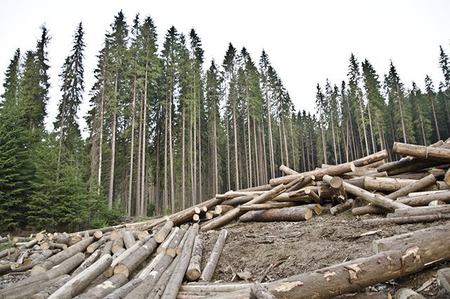
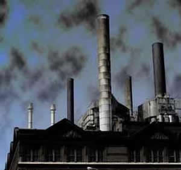
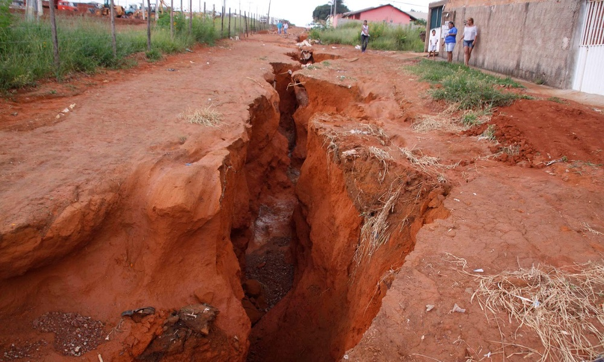
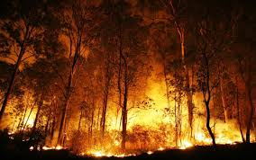
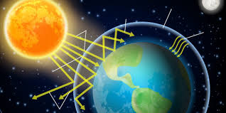
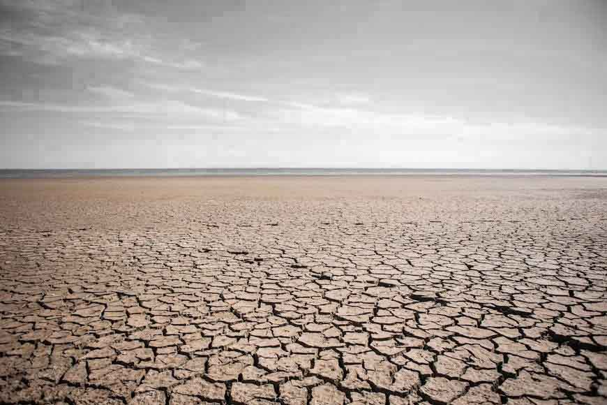

Tipos de Degradação Ambiental
Demastamento
 O desmatamento no Brasil teve início no período do descobrimento,
quando os portugueses começaram a explorar a Mata Atlântica. Nesse período, o artigo mais lucrativo era o pau-brasil,
e as caravelas partiam em direção à Europa cheias de toras dessas árvores.
A madeira do pau-brasil era utilizada especialmente para produzir instrumentos musicais e móveis, enquanto a seiva, de tom avermelhado,
servia para tingimento na indústria têxtil.
Atualmente, a principal motivação do desmatamento é a agricultura,
uma vez que muitos donos de fazenda derrubam grandes extensões de árvores nativas para “abrir caminho” para o plantio de alimentos.
Poluição atmoférica e da água
A poluição decorrente dos veículos e das fábricas causam degradação de dois elementos fundamentais para a sobrevivência de todos os seres vivos: a água e o ar. Quando esses recursos naturais são contaminados, tanto a fauna quanto a flora sofrem.
Erosão
Os processos erosivos são bastante conhecidos e se enquadram entre os fenômenos naturais da degradação do solo — embora o efeito possa ser potencializado por práticas dos seres humanos. A erosão se refere ao desgaste de rochas e solos, bem como ao transporte e a depósito dos sentimentos que acontece depois.
Queimadas
Os incêndios florestais e as queimadas são outro tipo de degradação ambiental causado por atividades econômicas. Isso porque alguns fazendeiros provocam incêndios para abrir espaço para lavoura e atividade pecuária. A irresponsabilidade dos fumantes também ocasiona incêndios, uma vez que as pontas de cigarro podem se tornar um foco inicial de fogo
Efeito estufa
Apesar do CO2 da atmosfera ser fundamental para manter a temperatura ideal para a manutenção da vida terrestre, o excesso desse elemento pode ser prejudicial. Isso porque o carbono tem a função de aprisionar parte das radiações solares infravermelhas e as refletir outra vez para a superfície, causando aquecimento global.
Salinização
Há uma série de fatores que explicam a salinização, mas, em resumo, pode-se dizer que o processo resulta da irrigação que emprega água com altos índices de sal. Esse tipo de degradação ambiental torna o solo menos improdutivo e é mais recorrente em zonas de clima árido e semiárido, onde a evaporação é maior.